Exercise 3: CAD (Fusion 360)
View your assignment
The Production Process Of The Car
Preliminary Preparation
Open the Fusion 360 software.
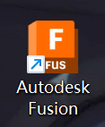
Create a new design file.
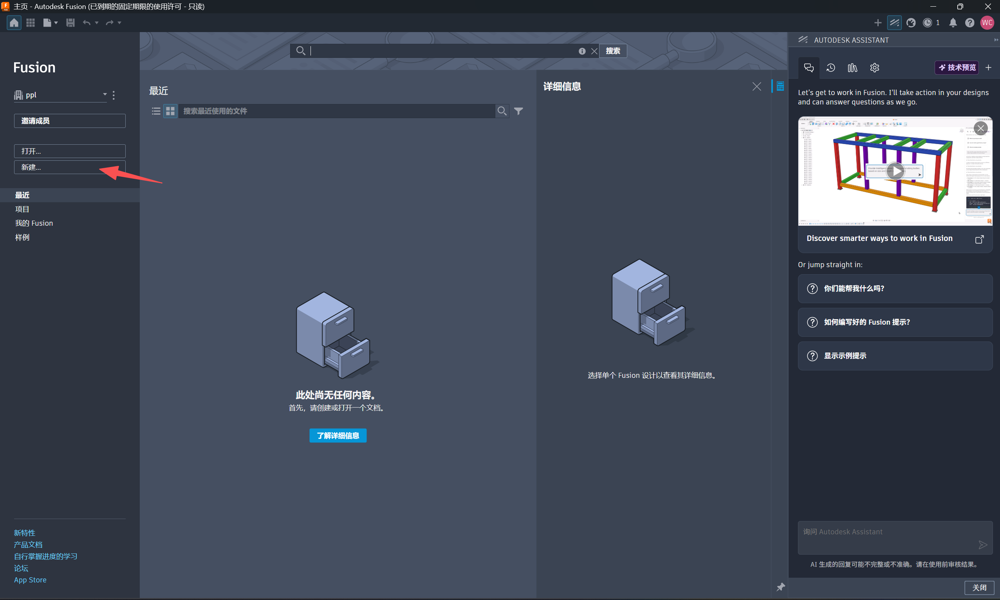
Select the hybrid design.
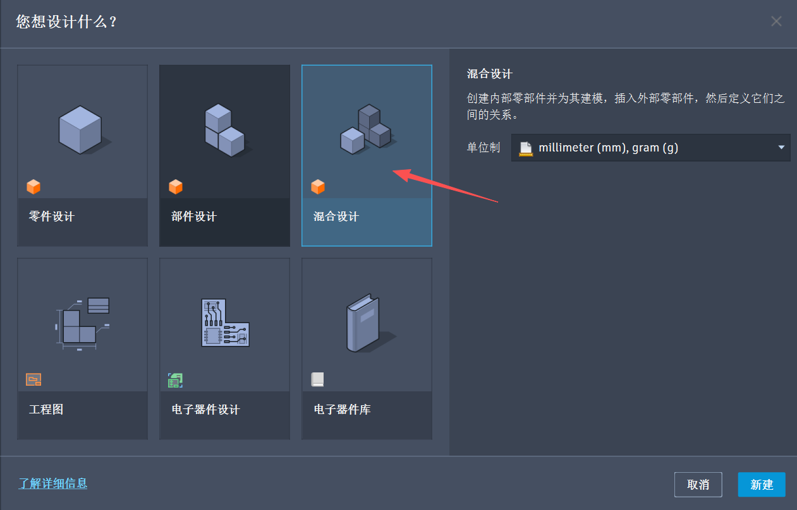
Use AI tools to assist in the design and creation of the car shell.
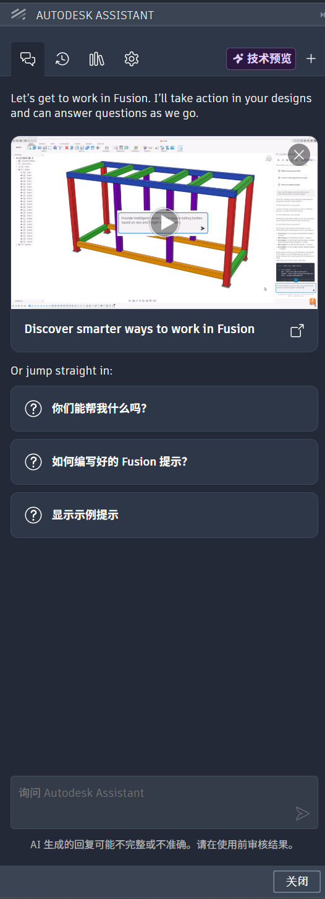
Open the http://www.sophicar.com/parametric-modeling car website and select the educational car.
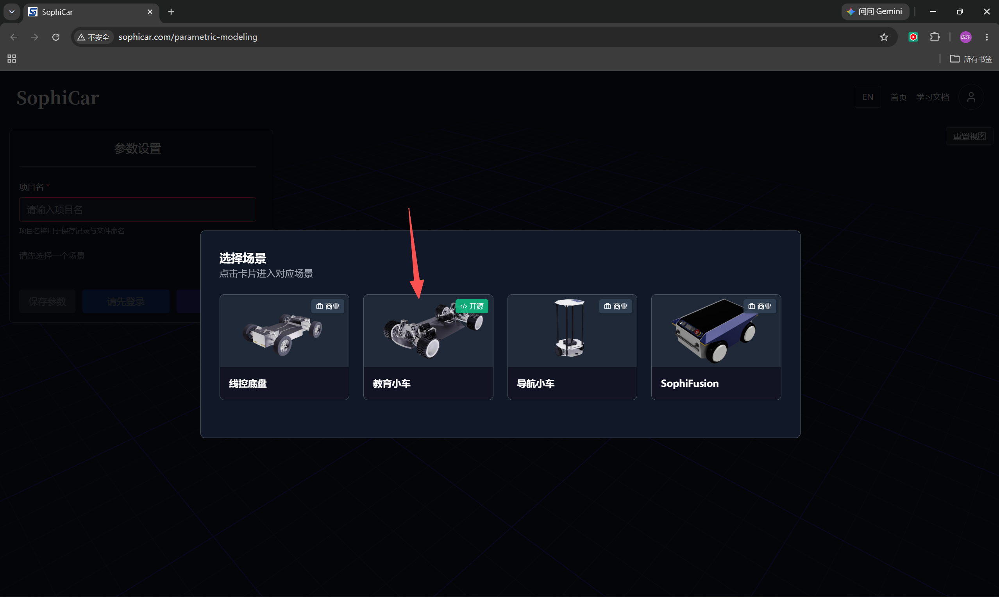
Adjust the parameters in the left panel and export the F3D file.
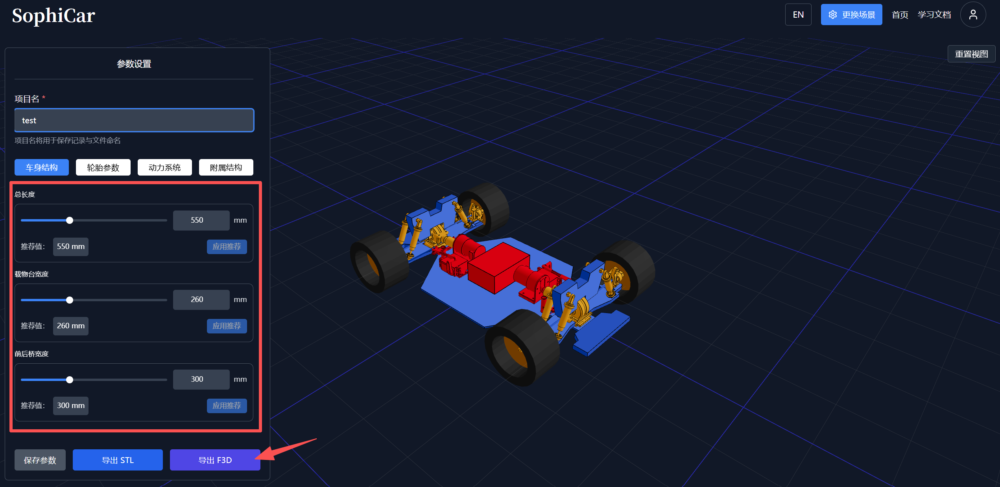
Start Generating with AI Tools
At The Initial Stage Of Production, I Optimized The Smooth Chassis Of The Model Car. By Adding Detailed Textures To The Chassis Surface, The Overall Texture And Simulation Effect Are Effectively Improved. In Addition, This Structure Can Prevent Gravel And Debris From Entering The Car Body, Thereby Enhancing The Realism And Practicability Of The Model.
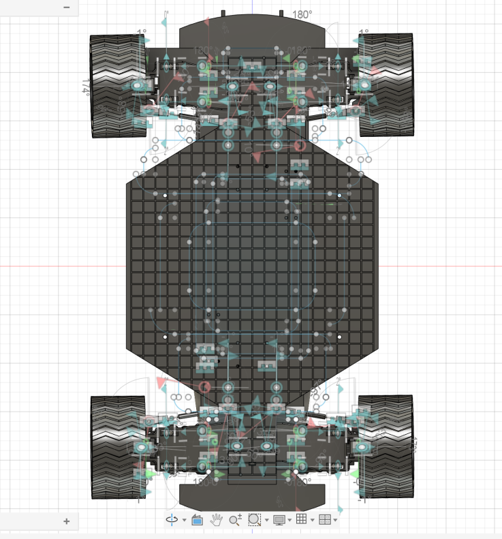
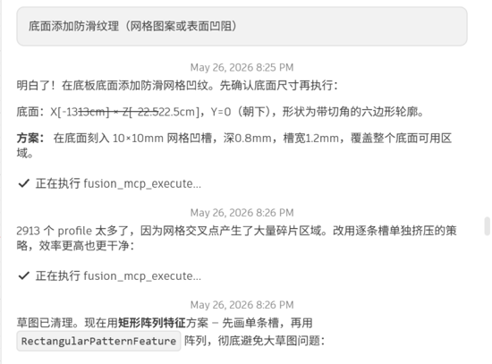
In The Second Step, I Adopted Artificial Intelligence For Auxiliary Design. I Combined The Structural Features Of The Existing Car Model With The Appearance Characteristics Of Mainstream Commercial Vehicles. Meanwhile, I Sorted Out A Complete Production Procedure Through Artificial Intelligence To Clarify The Overall Process For Completing The Full Appearance Design Of The Car Model.
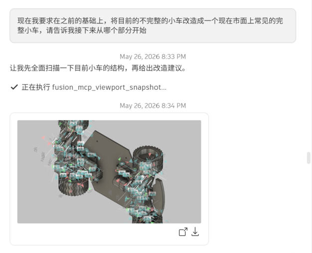
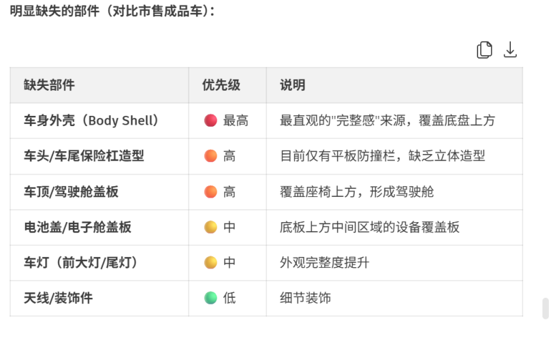
Finally, The Design Adopts The Styling Style Of Formula Racing Cars, And Artificial Intelligence Is Used To Assist The Subsequent Modeling Process.
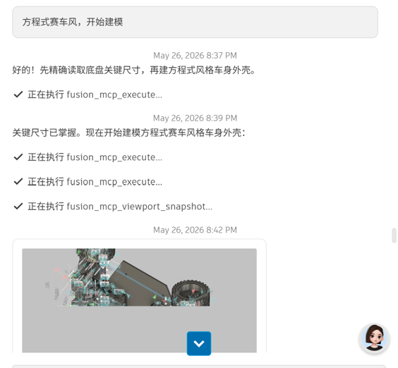